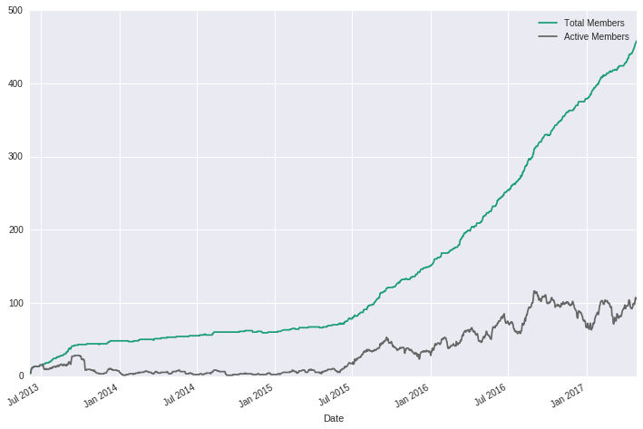

Bringing people together for a common cause is as rewarding as it is nerve-racking. However, the best projects generally are just that and I wouldn’t have it any other way.
As of this April, I am completing two full, successful years as an organizer for a data science community in the Tampa Bay area, Florida. In 2015, the group was almost two years old and had only held one meeting in that time. After taking the reins, I struggled to figure out how to increase participation and interest in a community that I felt very passionate about growing in my area. In the following two years, I increased the number of total members sevenfold and increased active members by almost 5000%. That begin said, I wanted to pass on the lessons (learned the hard way) that would have helped a lot when I first started.
 Count of Total Members vs. Active Members
{kind=link}
Member Thoughts - Biggest issues in Data Science
Make sure you REALLY care
When I took over as organizer of the group, I had just started freelancing, founded a non-profit, was taking a full load of classes in graduate school, was volunteering at a hackerspace, and was participating in the local Code for America brigade events. I was busy to say the least. But even with all this, I was dedicated to learning all I could about data science as both a concept and a community. I went out of my way, even when I was exhausted, to make sure the group had a place to meet and sponsorship to provide the group some additional perks. I do not think I would have gone to those lengths at my own expense had it not been for my growing love of data science. Being passionate for the subject meant I was actually eager to engage with people and to respond to them quickly; despite the fact I am an introvert in almost every sense of the word. I felt that the subject and related topic areas for the meetup group were important enough to override my instincts and to make the effort to build something for other people just like me. This made all the difference when things got tough.
“Sponsors?” or “Sponsors!”
Meetup groups or any form of community organization can be as financially exhausting as it is mentally/emotionally exhausting. Everything from having a physical place to meet to having food and/or “swag” can ramp up costs fairly quickly and it was not something with which I had any experience. Needless to say, I had not thought about where the group would meet when I took over nor how I would pay for things over time; I just had a big heart, a bunch of ideas, and not much else. However, there was good news for the group in that data science was and still is of massive interest for a large number of employers. In my case, I sent emails and made phone calls to businesses, recruiters, schools; anyone who would have had a vested interest in their company or people being associated with data science. This method turned out to pay off for me; I was able to get a business to host the group with a room and food within a month of restarting the group (I was even able to get Microsoft to sponsor the group). When the time came to move the group between sponsors and physical locations, my continued engagement with local sponsors and community members made this process fairly simple. This process is also important for the next point.
Establish legitimacy
People want to know that if they are going to drive 30+ minutes for a meetup and are sacrificing time away from family and work, the event is going to be worth it. The meetup group has to demonstrate a level of legitimacy to newcomers, especially if the group will be meeting in person. I went to great lengths to reword the landing page for the group to ensure that people knew exactly what the group was about and what the group was planning to do. Clear, concise language helped people better understand exactly where their interest lay in the scope of the meetup group. I also made sure food was provided and, when possible, speakers were lined up to talk on topics relevant to the current state of data science. I found that turn-out for events with speakers were far better than monthly round tables where the discussions were more impromptu.
After about a year, the organizers of the group decided to re-brand the groups name. This shift in language made the group focus more specific to data science, but also added to the legitimacy of the group as a community through which data scientists could come and socialize with their peers. Selection of the groups name and mission statement is definitely critical.
Social media also played a large part in this, though I will admit I am still not as good at staying persistently engaged on social media as I should be for the community. Tools like Hootsuite make this process much easier as does a monthly newsletter service. At a minimum, you should send out monthly messages to your group for at least the first year to ensure community members know you are staying engaged. Showing persistent activity lends to the perception that the group knows what it is doing and that its moving forward, even if you as the organizer feels like the exact opposite is occurring.
Continued engagement
Whenever someone messaged me, I always tried to respond as soon as possible to their questions and concerns. Doing this ensured that people knew that the organizers were serious about building a community rather than just attracting attention. This is a critical distinction that many meetups fail to manifest. I wanted to make sure that the discussions continued beyond the events and this certainly attracted a great number of people to the meetup that would attend more frequently and would bring others along for the ride. In the second year, I was much more attentive to finding speakers for the monthly meetings based on community feedback. Many times I would speak on my research interests or work just so their would be some direction for the attendees. Presentations were formed in such a manner that would situate the topic in the current state of data science, making it relevant and useful. In general, this was well received and generated much more follow-up discussion than the general monthly round-tables. The bottom line is that if you really care about the subject matter and put in the effort, people will see it and appreciate it.
Handle external influences carefully
In the two years I organized the Tampa Bay data science community, I was sent many requests and offers regarding everything from paying for the group’s expenses to companies speaking about specific products or services. I also encountered people sending messages to my group’s members without organizer permission as well as people offering organizers money-making schemes by leveraging their influence within the group. Needless to say, many of these interactions were shady and I had no idea how to handle them.
First and foremost, you do NOT want the group or yourself to lose legitimacy among the members (especially members who are your biggest supporters). In the case of people sending messages to the group sans organizer permission, I would send them a message politely asking them not to do that again. I would state if they have a data science-related matter they would like to present, they were more than welcome to come to a monthly meeting or special session to talk. Lastly, they were discouraged from sending any message to the group without the organizers first screening the content under threat of formal complaint to the Meetup administrators. In the case of money-making schemes, I simply replied that the group was not interested and only direct, legitimate sponsorship would be accepted by the group. In terms of companies wanting to talk, I often offered them special sessions as I wanted to maintain the monthly meetings as “community-led” conversations and presentations. For the special events the group sponsored, there was a lengthy process between us and the company or school in order to establish the details and how exactly it related to data science. This was critical in helping members determine if the event was worth their time and effort.
In the end, the organizers have to be proactive in responding to the communities needs, ensuring the community is being exposed to pertinent subjects, and mitigating negative external forces that threaten the legitimacy and reputation you have spent all your time building up.
Promote your superstars
Your time as an organizer of any community is going to involve speaking to many people. In that time, you will meet some amazing people who you truly enjoy talking to. Every time you talk to one another, you learn something new and it makes you that much more eager to leave an event and to start reading on a new topic. These are the people you want presenting at your meetings. They are just as passionate as you are about what they do and they are often extremely good at sharing information with others. This energy certainly inspires others to get more involved and to find their specialty in a field they care about. Overall, this only helps your organization become the “go to” place for the subject area focus that your community represents which ultimately helps all members of the group. As an organizer, this helps you to help others find jobs and opportunities as they come along. For the talented people, it helps them better brand and distinguish themselves from their day-to-day employ. This ultimately creates a great ecosystem where tools, techniques, and talented minds not only come to share, but to grow.
Conclusion
At the end of two years, I can definitely look back and say that I did something, but something only time will tell the relevance of. However, each member can look at the group and say they are part of something special and to me, that is the payoff. Anyone in my area can come to the group and get started in a new field and have the help of hundreds of like-minded people. For experienced professionals, it is a forum of peers who will help one another build and do amazing things. This is something that only occurs with a lot of effort and time being put into facilitating the mechanisms mentioned above that are necessary for a given subject area or group focus. These are the key points that, in my opinion, make the difference between a group and a community. As an organizer, I was able to help people find their path in a new area of knowledge and as a member, I was able to become a better data scientist in both my academic and professional endeavors. In the end, people should strongly feel they are personally invested in the community because they are!
This work is licensed under a Creative Commons Attribution-NonCommercial-ShareAlike 4.0 International License.